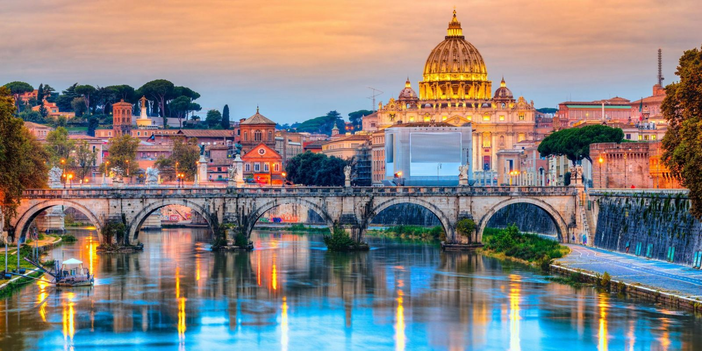

Ρώμη

Η Ρώμη (ιταλικά: Roma) είναι η πρωτεύουσα της Ιταλίας και μία ειδική κοινότητα (ονόματι Comune di Roma Capitale).
Είναι επίσης πρωτεύουσα της περιφέρειας του Λάτιου. Με 2.874.605 κατοίκους σε 1.287,36 τ. χλμ. είναι η μεγαλύτερη πόλη της χώρας.
Είναι η τέταρτη μεγαλύτερη πόλη της Ευρωπαϊκής Ένωσης σε πληθυσμό εντός των ορίων της πόλης.
Είναι το κέντρο της μητροπολιτικής πόλης της Ρώμης, η οποία έχει πληθυσμό 4,3 εκατομμυρίων κατοίκων.
Η Ρώμη βρίσκεται σο κεντροδυτικό τμήμα της Ιταλικής χερσονήσου, στο Λάτιο, κατά μήκος των οχθών του Τίβερη.
Το Βατικανό είναι μία ανεξάρτητη χώρα εντός των ορίων της πόλης της Ρώμης, το μόνο υπάρχον παράδειγμα μιας χώρας μέσα σε μια πόλη:
γι' αυτό το λόγο η Ρώμη ορίζεται συχνά ως πρωτεύουσα δύο κρατών.
Η Ρώμη είναι μια πόλη με σπουδαία ιστορία και αξιοσημείωτη προσφορά στην επιστήμη,
τον πολιτισμό και τις τέχνες. Γι' αυτό το λόγο, καθώς και για τα πολυάριθμα και εξαιρετικής ομορφιάς μνημεία της και
επειδή απο την αρχή της ίδρυσης της πόλης, μέχρι σήμερα παρέμεινε ως πρωτεύουσα, της έχει αποδοθεί η προσωνυμία «Η Αιώνια Πόλη».
 Το ιστορικό της κέντρο έχει καταχωρηθεί στη λίστα των Μνημείων Παγκόσμιας Κληρονομιάς της UNESCO από το 1980.
Το ιστορικό της κέντρο έχει καταχωρηθεί στη λίστα των Μνημείων Παγκόσμιας Κληρονομιάς της UNESCO από το 1980.
Η Ρώμη βρίσκεται στην κεντρική Ιταλία, στην περιφέρεια Λάτσιο, και διατρέχεται από τον ποταμό Τίβερη. Η ιστορική πόλη είναι κτισμένη ανατολικά του ποταμού πάνω σε επτά λόφους. Οι λόφοι αυτοί είναι: ο Παλατίνος, ο Κυρηνάλιος, ο Καπιτωλίνος, ο Βιμινάλιος, ο Εσκυλίνος, ο Κέλιος και ο Αβεντίνος. Το κέντρο απέχει περίπου 24 χιλιόμετρα από τη θάλασσα, αλλά η αστική περιοχή φτάνει μέχρι τις ακτές στο Τυρρηνικό πέλαγος.